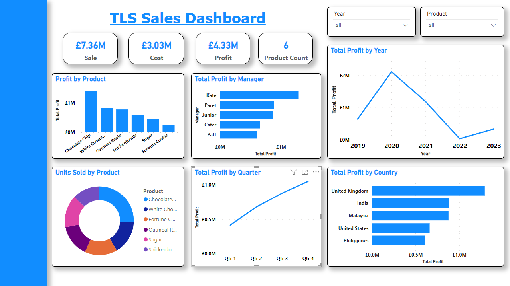
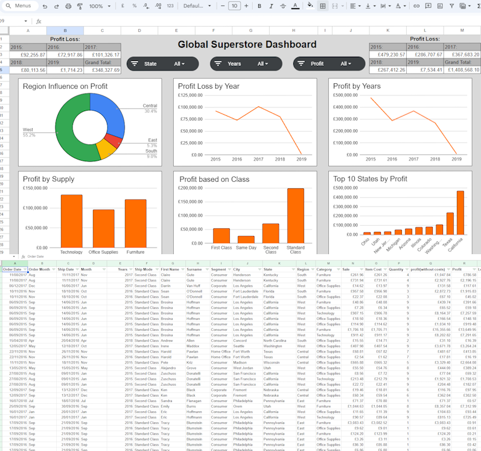
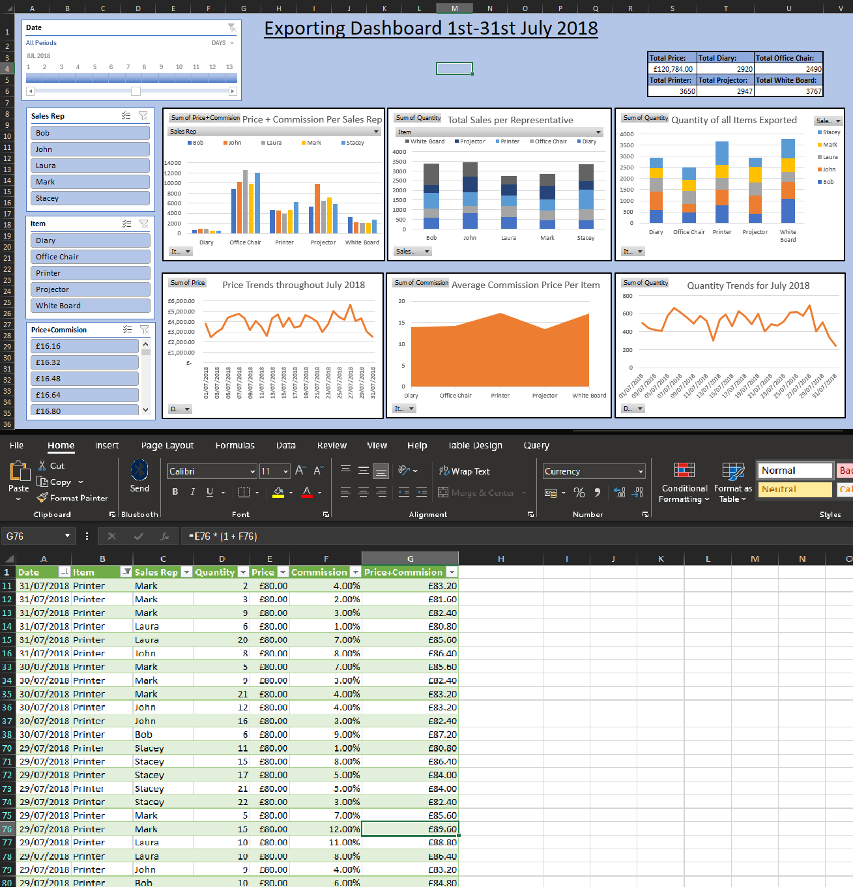
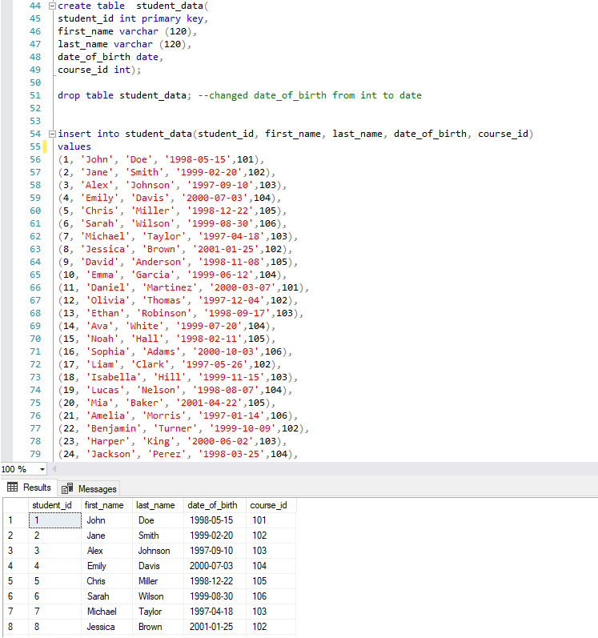
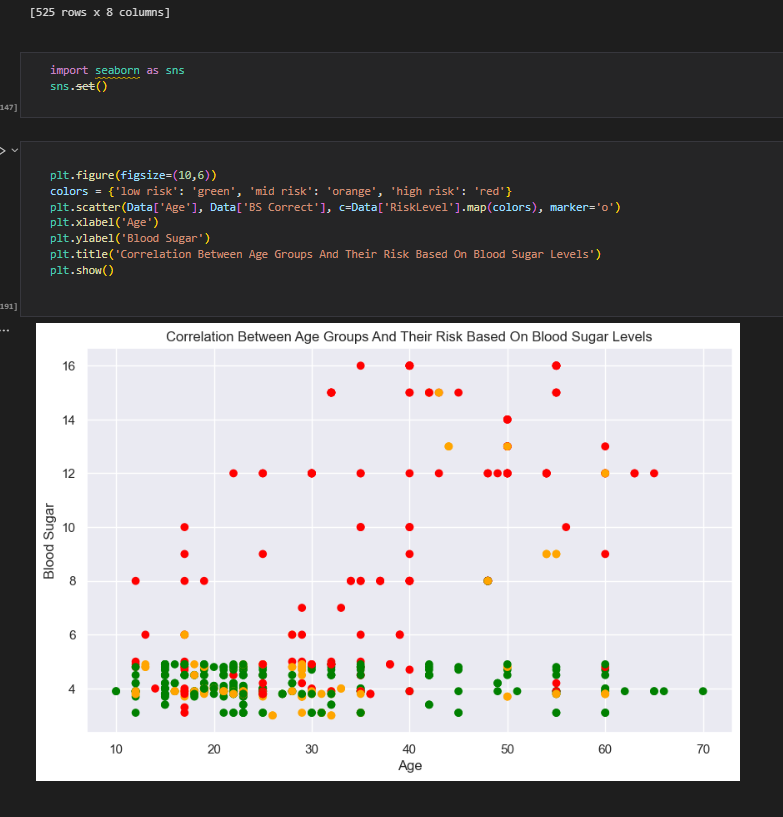
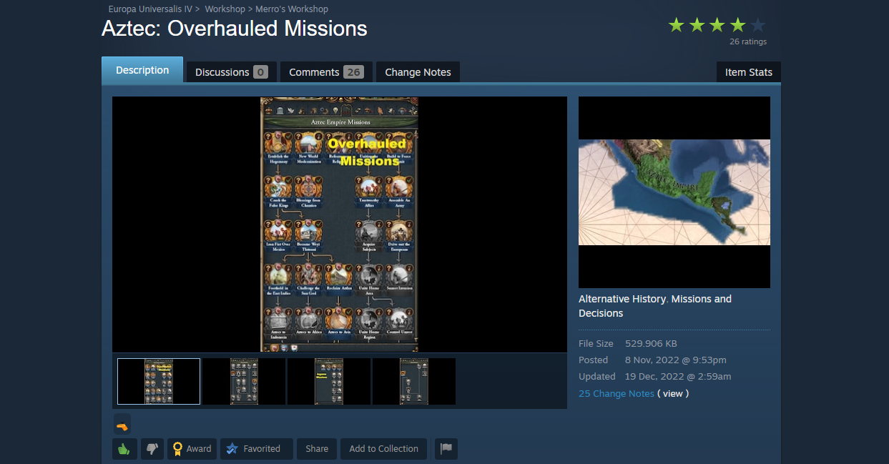
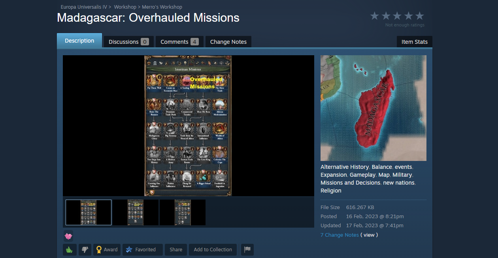

This represents my first experience using Power BI. I worked with two datasets that needed cleaning—removing null values and filling in empty spaces. After this cleanup, I added new columns to better prepare the data for visualization. The dashboard I created aimed to demonstrate my abilities in a trading/retail context. I'm pleased with how it turned out and found Power BI easy to grasp. Looking forward to using it again in the future!


This project took place on 20th of February, during the project I was given an unclean dataset and I would clean it, adding columns as needed, then I would answer questions on another sheet pertaining to the datasets such as "Sort Dataset by state", once I had completed all of the questions I would then get to visualising and creating a dashboard.

The Excel project involved being given a set of data which I would then clean, add new columns, do what was needed to do to prepare for the visualisation stage in which I would use Excel's tool such as Pivot Tables and Slicers in order to create an interactive dashboard ready for a presentation.

This project was my introduction into SQL, the project involved me being given two sets of data which I would then use to create 2 tables, I would refer to my tasks given in order to meet the requirements of each task, for example: Retrieve courses with more than 3 credits, sorted by the number of credits in descending order.

The Python project involved being given a .csv file containing a dataset that needed to be cleaned by filling in the NaN data and removing duplicates. I used averages based on specific ages to determine the most suitable values for the undefined entries. This process led to the next step, which involved utilizing visualization libraries such as Seaborn and Matplotlib to create a chart that would facilitate a risk assessment on blood sugar.

This project was my first attempt at coding. I didn't have any prior experience, but I was passionate about turning my interest in history into something more. Surprisingly, this project opened the door to the world of technology for me. Even though the code was basic, it became quite popular on the workshop.

The Madagascan Project represents my second mod developed for Europa. This iteration boasts enhanced streamlining and far more advanced coding than my previous mod, yielding a refined user experience, this is evident in the in-game mission tree as well as the localisation file allowing better storytelling.